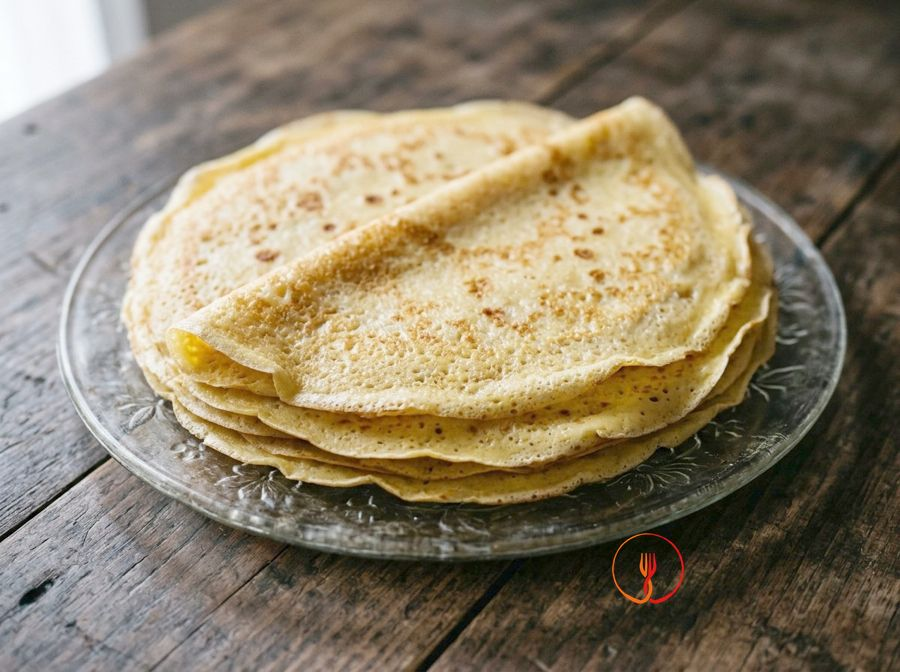

Crepes
Ingredienti
- farina 00250 gr
- latte intero500 ml
- uova medie2 numero
- burro fuso30 gr
- sale1 pizzico
Allergeni
Glutine, Latte, Uova
Può contenere tracce di: Frutta a guscio, Soia.
Procedimento
- Rompi le uova in una ciotola e sbattile leggermente con una frusta.
- Versa circa metà del latte e incorpora gradualmente la farina setacciata.
- Mescola energicamente fino a ottenere una pastella liscia e priva di grumi.
- Aggiungi il latte restante, il sale e il burro fuso ormai tiepido.
- Copri la ciotola e lascia riposare la pastella in frigorifero per almeno 30 minuti.
- Scalda una padella antiaderente leggermente imburrata e versa un mestolino di composto.
- Ruota la padella per distribuire la pastella in uno strato sottile e cuoci circa un minuto per lato.
- Continua fino a terminare il composto, impilando le crêpes su un piatto.
Consigli dello chef
Consigli, errori e alternative:
- Se la pastella è troppo densa aggiungi poco latte.
- Non versare troppo composto nella padella.
- Per crêpes dolci aggiungi 30 g di zucchero e vaniglia.
- Per quelle salate puoi aggiungere erbe aromatiche o formaggio grattugiato.
Valori nutrizionali (stima)
| Per porzione (188 g) | Per 100 g | |
|---|---|---|
| Energia | 1619 kJ / 387 kcal | 862 kJ / 206 kcal |
| Proteine | 14 g | 7.4 g |
| Carboidrati | 51 g | 27 g |
| di cui zuccheri | 7.3 g | 3.9 g |
| Grassi | 14 g | 7.5 g |
| di cui saturi | 7.7 g | 4.1 g |
| Fibre | 1.6 g | 0.9 g |
| Sale | 0.5 g | 0.2 g |
Valori stimati con l'AI su dati medi CREA / USDA: sono indicativi e non sostituiscono il parere di un medico o di un nutrizionista.
Apri la ricetta nell'app per la lista della spesa, le schede ingredienti e i negozi vicini.